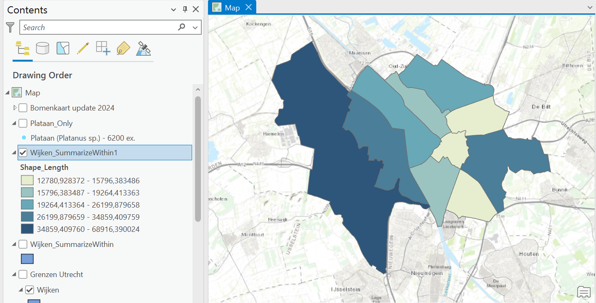
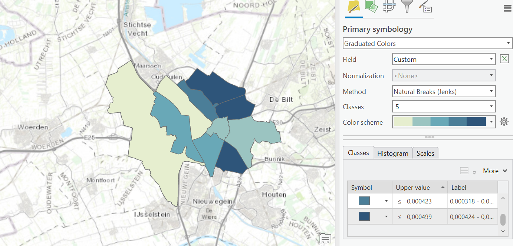
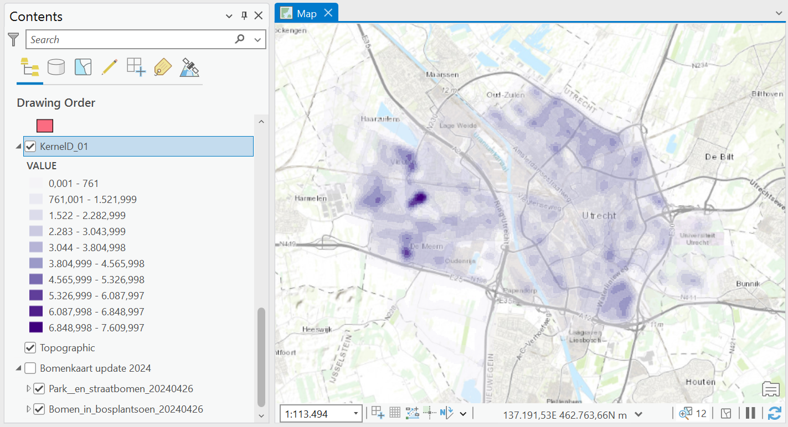

Vector maps
Arc GIS Pro gives you the ability to use many hosted feature layers. In this section a few maps that were made using the Utrecht hosted feature layer of trees are displayed. The data encompasses all trees planted by the Utrecht municipality. A rare set of detailed vector data that is publicly available. Let's have a look at what these data can tell us.
Plantane filter:

In this first map I was able to filter out one specific tree type: the plantane. As you can see, there are not that many plantane's placed in Utrechts public areas.
Tree distribution - choropleth:
Now taking a look at the general distibution of trees in Utrecht. For this I used a coropleth map showing the amount of trees per 'wijk' (neighbourhood). However, you can see that the different regions vary quite a lot in size. So, this map (below) showing the number of trees per area is a better indicator for how rich in trees you would judge each region.
Kernel density:
To better understand the distribution of the trees, a kernel density map can be made. This shows where most of the trees are concentrated.
Kernel Density is defined as calculating the density of point features around each output raster cell. Conceptually, a smoothly curved surface is fitted over each point.
Creating the Maps:
All the above maps were created in Arc GIS Pro, mainly using simple analyses. These maps made for a good exercise to get to know Arc GIS Pro and all its ablities.